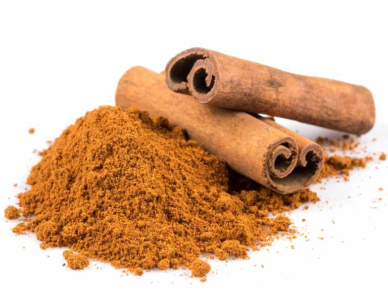
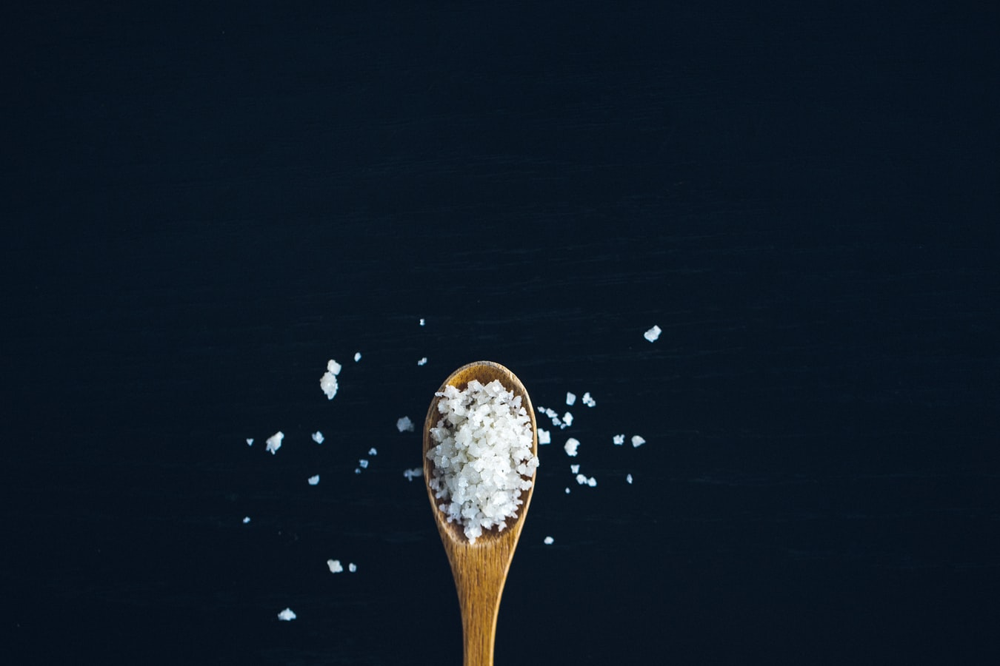
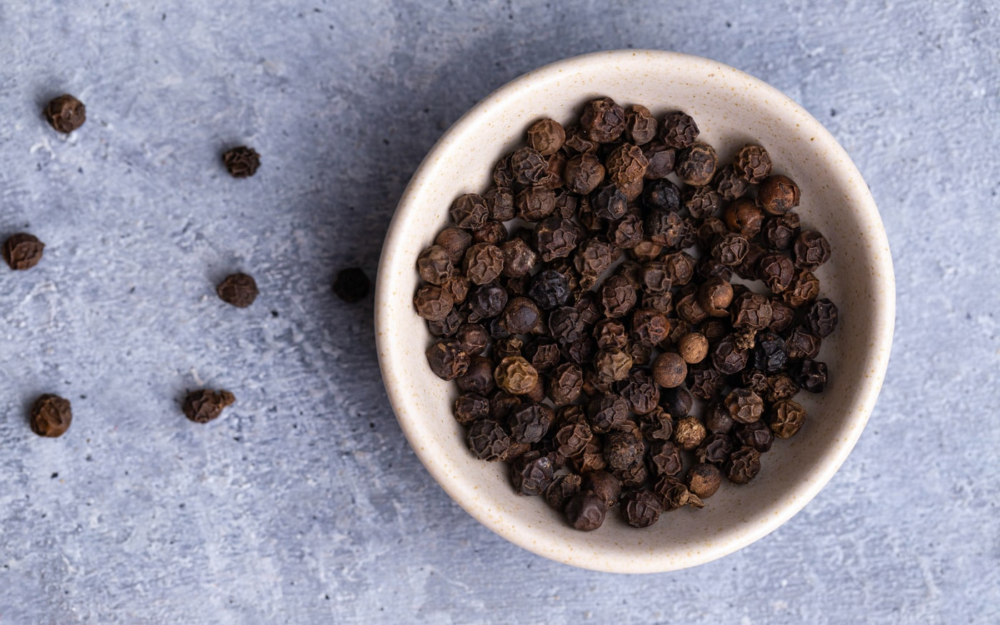

Zacca Spice Store - Welcome to our Online Store!
Shop our full inventory of spices from the convience of your home.
Here are some helpful guidelines before you get shopping:
Buy small quantities. Large budget packs seem cheaper, but it’s a false savings if you end up with stale ingredients that you need to throw away.
Spices don’t have to be kept in the dark, but do avoid direct sunlight and store in a cool, dry part of the kitchen. Heat and light break down all-important oils, affect the flavor and also degrade the antioxidants.
The easiest way to tell if a spice is still potent is to have a sniff. If it’s pleasant and pungent, it’s OK to use.
The best way to buy spices is to get them whole, then grind them as needed—the flavor and aroma of whole spices tend to be more stable. You can use a mortar and pestle or a spice/coffee grinder for this.
Cinnamon

Cinnamon is used mainly as an aromatic condiment and flavouring additive in a wide variety of cuisines, sweet and savoury dishes, breakfast cereals, snackfoods, tea and traditional foods
$6.50 for 12 ounces
Salt

You know what salt is...
$3.00 for 16 ounces
Pepper

Black pepper is a flowering vine in the family Piperaceae, cultivated for its fruit, known as a peppercorn, which is usually dried and used as a spice and seasoning.
$5.00 for 20 ounces
Click here to go back to the homepage